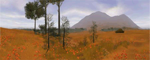
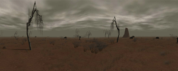
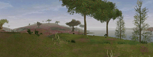
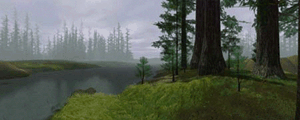
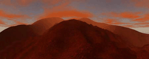
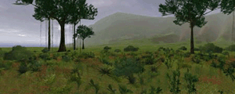
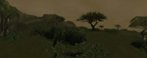
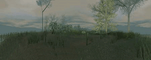
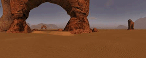
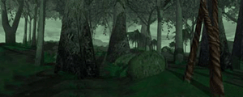

The purpose of this document is to examine the major filmed celestial bodies of the STAR WARS universe. In real life, astronomical objects are investigated by measurement of their motions and features as shown in photographs, spectrographs and other exotic instruments. Consideration of the geometry and physics underlying and giving rise to the photographic image allows the properties of the objects to be measured or constrained indirectly.
There is not much left...
Corellia

- Terrain: Fields, Forests, Seas, Cities
- Key Locations: Coronet, Agrilat swamps, Gold beaches
Although Corellia has never appeared in any of the Star Wars films, it's a key location in the greater Star Wars saga. Most notably, Corellia is Han Solo's homeworld. Other Corellian native sons include Rebel general Crix Madine, outspoken senator Garm Bel Iblis, and Rogue Squadron's Corran Horn. Corellia also witnessed the birth of the Rebel Alliance when senators Mon Mothma, Garm Bel Iblis, and Bail Organa vowed to overthrow senator Palpatine and signed the so-called Corellian Treaty, which officially founded the Rebel Alliance. Corellia's terrain includes fields, forests and seas, as well as bustling cities glistening with skyscrapers. Correllia has become a center for interplanetary commerce, offering both merchants and buyers a healthy and stable environment for trade. Rumors have emerged that Princess Leia Organa has established a hidden "command and control" center for Rebel operations on Corellia and seeks the services of sympathizers to aid the Rebellion.
Dathomir

- Terrain: Canyons, Forests, Jagged mountain peaks
- Key Locations: Imperial prison, Witch villages, Rancor habitats, Mountain passes
Dathomir is a low-gravity world located in the Quelii sector. The planet is inhabited by the Witches of Dathomir, a group of Force-sensitive women who ride fearsome rancors. These "witches" live in different clans that include a group of darksiders calling itself the Nightsisters. The 'Singing Mountain Clan' and the 'Nightsisters' are at odds with one another - and with visitors who fail to show the proper respect. Visitors can align themselves with either side and benefit from trade with these powerful indigenous creatures. Dathomir can only be accessed by special charter transports operated by skilled pilots. Its terrain is highly dangerous. Besides rancors, the witches are a constant threat on Dathomir. Dathomir has not appeared in any of the films, but is an important part of the Star Wars Expanded Universe. It appears in such books as The Courtship of Princess Leia, Darksaber, Star by Star, and Children of the Jedi. Additional information on the planet can be found in reference sources including The Star Wars Encyclopedia. The Essential Guide to Planets and Moons, and LucasArts Entertainment's Behind the Magic. Infinity's End, a story-arc within Dark Horse's ongoing Star Wars comic book series also takes place on Dathomir.
Dantooine

- Terrain: Grasslands, Steppes
- Key Locations: Dantari camps, Unnamed spaceport
Dantooine is a relatively isolated and unspoiled world dominated by sprawling grasslands and large oceans. The planet is inhabited by humanoid nomads known as the Dantari. The Dantari are hardy, yet primitive beings that can be found hunting along the coastlines. Thousands of years before the Battle of Yavin, Dantooine served as the site of a small Jedi academy overseen by Master Vodo-Siosk Baas. Over the centuries, the planet has also attracted a handful of colonists, who live in rustic family estates spread across the planet. The planet does have one small spaceport to handle new arrivals. Because of its remote location and small native population, Dantooine recently housed the Rebel Alliance's primary base. The Rebels eventually discovered an Imperial tracking device aboard a cargo shipment to the base, and promptly evacuated the site in a single day. When Grand Moff Tarkin threatened to destroy Princess Leia's homeworld of Alderaan, she revealed that Dantooine was indeed a Rebel hideout, although she was well aware that the Rebels had already abandoned the planet. Since the destruction of the Death Star, the Empire has established a small outpost on Dantooine, if only to prevent the Rebels from returning. In addition, Dantooine is the central base of operation for a small band of smugglers known as the Gray Talon.
Endor

- Terrain: Forests, Mountains, Desert, Savannas, Lakes
- Key Locations: Ewok villages, Marauder sites, Gorax caves
Star Wars Galaxies gameplay occurs on the forest moon of Endor, as opposed to the gas giant planet that's also named Endor. The Endor "System" is located at the edge of the Moddell Sector. Prominently featured in Star Wars film Return of the Jedi, the forest moon of Endor has great significance in the Star Wars saga as the site of the Battle of Endor. The battle is fought to abort the secret construction of the Empire's second Death Star battle station. Star Wars Galaxies takes place during the Galactic Civil War, before the Battle of Endor. The threat of a second Death Star looms as the Empire pushes forward with construction of another of these deadly weapons. Endor's terrain incorporates the Ewoks' treetop villages, the Gorax caves, and other wilderness areas. There are no cities or urban regions of commerce on Endor and there are no opportunities for new residents to build homes or establish settlements. However, Endor offers great chances to develop interesting trade relations with some of its inhabitants, including Ewok tribes and cunning Marauders, if their trust can be earned. One of Endor's other notable inhabitants is the mystical Tulgah witch, Morag.
Lok

- Terrain: Red deserts, Sulfur pools, Mountains, Lava lands
- Key Locations: Nym's base
One of the first planets in the Karthakk system to be colonized, the harsh world of Lok was originally home to outlaws, who saw the world as a potential staging ground for raids into the Mid-Rim. Over time, Lok became known as a "pirate world," where anarchy and violence were the only constants. Lok has fairly varied terrain, ranging from the dangerous sulfur pools to bubbling lava pits. The landscapes are generally foreboding: jagged mountain ranges, long expanses of baked desert, and desolate flats are typical environments on Lok. The presence of pirates and others is evident in the shipwrecks, burned-out bases, abandoned settlements, and destroyed vehicles that litter the planet. Before the Battle of Naboo, one of the most prominent leaders on Lok was a Feeorin pirate named Nym. The hardy alien - who has only become more formidable with age - spent many years battling the Trade Federation. He is now a local crime lord, but it is also rumored that he is very sympathetic to the Rebellion... Players who visit Lok can expect to encounter a wide range of threats, from marauding pirates to the local wildlife, most of which is decidedly dangerous. However, those who prove themselves to Nym will gain access to a number of lucrative and exciting missions.
Naboo

Naboo is one of the most geographically diverse planets in Star Wars Galaxies with terrific points of interest for those with exploration in their hearts. From the darkest depths of the Lianorm Swamps to the frozen peaks of the Gallo Mountain Range to lush tropical jungles and dense forests, Naboo teems with fantastic locales and unusual creatures. The peaceful humans, called the Naboo, and the more warlike Gungans are the two most populous groups inhabiting the planet. Gungans and Naboo have clashed with one another in the past, but they've also fought together, most notably against the Trade Federation invasion. The Emperor has erected a stunning retreat on Naboo where he holds summits with high-ranking Imperial personnel. Imperial sympathizers can find a wide range of adventures here to pull them headlong into the throes of the Galactic Civil War. Perhaps after many trials and successful missions on behalf of the Empire, the most skilled agents may even gain an audience with the Emperor himself.
Rori

- Terrain: Swamp, Hills, Cities, Mountains, Grassland
- Key Locations: At least one unrevealed city at present
Rori is one of Naboo's moons and shares a number of traits with its parent planet. Just as one might describe Talus as a "creepier version of Corellia," Rori can be described as a "more bizarre version of Naboo." The forests and other vegetation are said to be more twisted and knotted than Naboo's plantlife. The strong resemblance between architecture on Rori and Naboo is no accident, for the inhabitants are human colonists from Naboo. Rori is making its first appearance in the Star Wars continuity through Star Wars Galaxies; it has yet to appear in any of the films or in the Expanded Universe sources.
Talus

- Terrain: Fields, Forests, Seas
- Key Locations: Dearic spaceport
One of the five habitable planets in the Corellian system, Talus is a blue, white, and green world. The elected Federation of the Double Worlds, or Fed-Dub, rules Talus. Beneath the surface of Talus is a planetary repulsor, which was used in ancient times to move the planet into its current orbit from an unknown location. In terms of terrain, Talus strongly resembles its "brother" world, Corellia, but possesses its own range of unique environments, including mudflats and ravines.
Tatooine

- Terrain: Desert, Canyons, Settlements, Cities
- Key Locations: Jabba's Palace, Fort Tusken, Mos Eisley, Mos Espa
Tatooine is a desert planet that may appear on initial inspection to be limited in what it has to offer. However, Tatooine holds a wealth of exploitable resources, such as minerals and exotic gases, for those with the dedication, skill and specialized equipment to harvest them. The population of Tatooine is a mix of hard-working locals and a transient criminal element led by the Hutts. The Empire has a presence here, as do Rebel sympathizers. Since Tatooine is located at a nexus of several prominent hyperspace routes, the desert world is a common stopover for Outer Rim travelers. The mysterious B'omar Monastery, home to Jabba the Hutt, can be found in the outer reaches of Tatooine. This enormous structure shelters Jabba's army of henchmen, and vast stores of contraband. Those with a taste for criminal activity will find a treasure trove of quests here, as long as they stay on Jabba's "good side." "Fort Tusken," a long-forgotten military outpost can be found on Tatooine as well. The Fort was established by interplanetary settlers long ago, but was overrun by the hostile Sand People.
Yavin 4

- Terrain: Jungles, Lakes, Streams
- Key Locations: The Great Temple, Abandoned temples, "Scorched earth" area
Yavin 4 is a jungle moon orbiting the gas giant planet of Yavin. An Imperial presence, established after the Battle of Yavin, makes traveling to the planet difficult and dangerous. However, those with a deep interest in the Imperial cause may decide to help the over-worked military presence on Yavin 4. In the Star Wars saga, Yavin 4 plays a significant role as the staging area for the Battle of Yavin, where the first Death Star was destroyed by the Rebel Alliance. In Star Wars Galaxies, the moon remains a hotbed of conflict between the Empire and the Rebels. Battles for control of Yavin 4 are a central part of the ongoing Galactic Civil War, as is the exploration of its abandoned temples. The adventurous will encounter a variety of creatures. The Massassi, the original inhabitants of Yavin 4, have long since disappeared but rumors persist of survivors deep in the jungles...